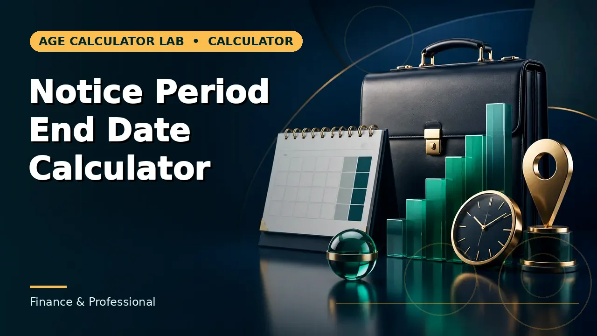

Quick answer
Gratuity is generally payable after 5 years of continuous service with the same employer. On death or disablement it is payable regardless of service length, and from 21 November 2025 fixed-term employees qualify after one year on a pro rata basis. For employees covered by the Act, gratuity up to ₹20 lakh is exempt from income tax over a lifetime.
The 5-year rule
“Continuous service” means service without a break that the Act treats as interrupting it. The 5 years are counted with the same employer; changing employers restarts the clock unless the law or an agreement provides otherwise, as in some transfers within a group or on a sale of business.
The 5-year condition is about eligibility, not about the amount: once eligible, the formula counts all the service, including the first 5 years. There is no separate deduction for the qualifying period. And remember the rounding edge: 4 years and 7 months counts as 5 years, so eligibility can arrive before five calendar years have passed.
Fixed-term employees: the 2025 change
From 21 November 2025, the Code on Social Security gives fixed-term employees gratuity after one year of service, on a pro rata basis. This is the biggest eligibility change in decades: a fixed-term employee who previously got nothing before five years now qualifies at one year, with the amount proportionate to the service.
Permanent employees are unchanged at five years. If you are on a fixed-term contract, check whether your employer has applied the new rule — it is recent, and payroll practice is still catching up.
Death and disablement: the exceptions
On death or disablement due to accident or disease, gratuity is payable to the employee or their nominee regardless of how short the service was. This is the Act’s most important exception, and it exists because the payment is meant as a family protection as much as a service reward.
Nomination matters here: an employee should have a nominee recorded, because on death the gratuity is paid to the nominee (or, failing one, to the heirs). The formula is unchanged — only the service condition is waived. If a woman dies during maternity leave, the same nominee principle applies to her maternity benefit.
Breaks in service
Not every absence breaks continuity. Leave with wages, leave due to sickness or accident, lay-off, and strikes or lockouts that are not illegal generally do not interrupt continuous service under the Act. Unauthorised absence and some kinds of termination do. Where a break is disputed, the controlling authority decides — a calculator cannot settle it, and this site’s gratuity tool counts continuous calendar service from the joining date entered.
Tax treatment: the lifetime limit
For employees covered by the Payment of Gratuity Act, gratuity up to ₹20 lakh is exempt from income tax. For employees not covered by the Act, the exemption is the least of the actual gratuity, ₹20 lakh, or half a month’s salary per completed year. Government employees’ gratuity is fully exempt.
The point most people miss: the ₹20 lakh exemption is a lifetime limit across every employer. Gratuity exempted earlier reduces what is available later — ₹5 lakh exempted once leaves ₹15 lakh for the future. Any amount above the limit is taxed as salary income at your slab rate. The exemption sits in section 10(10) of the old Income-tax Act and in section 19 of the Income-tax Act, 2025, and applies under both the old and new tax regimes.
When gratuity can be forfeited
Gratuity can be wholly or partly forfeited where an employee’s services are terminated for wilful omission or negligence causing loss or damage to the employer’s property, or for riotous or disorderly conduct or any act of violence, or for an offence involving moral turpitude committed in the course of employment. Forfeiture is not automatic on any dismissal — it requires the specific grounds and, in practice, an order. If forfeiture is threatened, the grounds and the procedure are worth challenging.
Claiming gratuity: the process
Apply in writing to the employer when gratuity becomes due — on retirement, resignation, death or disablement. The employer must pay within 30 days; delay attracts interest. If the employer does not pay, or pays less than the statutory figure, the dispute goes to the controlling authority, which can order payment. Keep the appointment letter, salary slips showing basic plus DA, and the service record: those three documents decide almost every gratuity dispute.
Common mistakes to avoid
Assuming any resignation before 5 years earns a proportionate gratuity (it generally does not, except fixed-term employees from 2025 and death/disablement); assuming a transfer preserves service automatically (it depends on the terms); forgetting nomination; confusing the ₹20 lakh tax exemption with a per-employer cap; and accepting a forfeiture or a 15/30 calculation without checking coverage and grounds.
Related calculators
Use the Gratuity Calculator for the figure, and the notice and career tools for the dates around a departure.


Frequently asked questions
Who is eligible for gratuity in India?
An employee who has completed 5 years of continuous service with the same employer, in an establishment covered by the Payment of Gratuity Act.
Is gratuity payable if I resign before 5 years?
Generally no, except on death or disablement, and — from 21 November 2025 — for fixed-term employees after one year on a pro rata basis.
Do fixed-term employees get gratuity?
Yes, from 21 November 2025 under the Code on Social Security: after one year of service, on a pro rata basis. Permanent employees still need five years.
Does changing jobs reset gratuity service?
Generally yes, unless the law or an agreement preserves it, as in some group transfers or business sales.
Do breaks in service affect eligibility?
Some absences (paid leave, sickness, lay-off, legal strikes) do not interrupt continuity; unauthorised absence and some terminations do. Disputes go to the controlling authority.
Is the ₹20 lakh exemption per employer?
No. It is a lifetime limit across all employers. Earlier exempted gratuity reduces the remaining exemption.
Is gratuity taxable in India?
For covered employees, gratuity up to ₹20 lakh is exempt over a lifetime; government employees’ gratuity is fully exempt; amounts above the limit are taxed as salary.
Can gratuity be forfeited?
Only on specific grounds: wilful omission or negligence causing loss, riotous or disorderly conduct or violence, or an offence involving moral turpitude in employment.
How do I claim unpaid gratuity?
Apply in writing to the employer; payment is due within 30 days, with interest on delay. Unpaid or short-paid gratuity goes to the controlling authority.
Who receives gratuity on an employee’s death?
The recorded nominee, or failing one, the heirs — with the formula unchanged and the service condition waived.